{kind=link}
{kind=link}
{kind=link}
Introduction
| 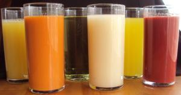 |
| Different juices |
| (c) Su Kahumbu, Kenya |
A wide range of drinks can be made using extracted fruit juice or fruit pulp as the base material. Many are drunk as a pure juice without the addition of any other ingredients, but some are diluted with sugar syrup. The types of drink made from fruit can be separated into two basic types;
- Those that are drunk straight after opening
- Those that are used little by little from bottles which are stored between use.
| Natural Juices - Pure fruit juice with nothing added
|
| 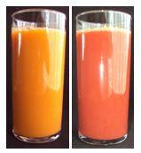 |
| Carrot, beetroot carrot mix juice |
| (c) Su Kahumbu, Kenya |
| Nectars - Normally contain 30% fruit solids and are drunk immediately after opening
|
| 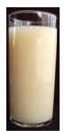 |
| Guava nectar |
| (c) Su Kahumbu, Kenya |
| Squashes - Normally contain at least 25% fruit pulp mixed with sugar syrup. They are diluted to taste with water and may contain preservatives |
 |
| Orange squash |
| (c) Su Kahumbu, Kenya |
| Cordials - Are crystal-clear squashes
|
| 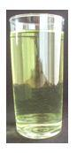 |
| Lime cordial |
| (c) Su Kahumbu, Kenya |
| Concentrates - Juices where water is extracted form the juice They normally have a high sugar content Each of the above products is preserved by a combination of natural acidity, pasteurisation and packaging in sealed containers. Some drinks (syrups and squashes) also contain a high concentration of sugar which helps to preserve them. |
 |
| Mango nectar |
| (c) Su Kahumbu, Kenya |
Kiswahili Version
- Vile ambavyo vinaweza kutumiwa punde tu baada ya pakiti zao kufunguliwa.
- Vile vinavyochoviwa kidogokidogo kutoka kwenye chupa na hatimaye kuhifadhiwa baada ya kutumiwa.
Fruit and Veg Juice Processing
Processing facility
- A potable water supply including hot water. Water quality is critical, if in doubt use boiled water or add one tablespoon of bleach to each gallon of water to sterilise it. If water is cloudy, a water filter should be used.
- Preferably electricity
- Screened windows and doors to reduce insects
- No horizontal ledges, window sills, or rafters where dust, insects and bird droppings can collect.
- Clean hard surface preferably steel working surfaces
- Separate storage area for chemicals, packaging materials and cleaning materials
- Sloping concrete floor
- Proper drainage for washing down each day
Juicing step-by-step
Manual Juice Making
This is a basic form of making juice without the help of any electrical machinery. The process is labour intensive and sometimes a less efficient extraction method.
| 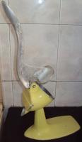 |
| Manual juicer |
| (c) Su Kahumbu, Kenya |
| 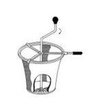 |
| Hand power pulper |
| (c) Apropedia Practical Action Brief |
1. Squeezing or pressing
2. Sieving/Pulping
| 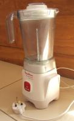 |
| Blender |
| (c) Su Kahumbu, Kenya
|
1. Disintegration through process of blending
Soft fruits/veg may be blended using commercial blenders resulting more often in "nectars" where the pulp remains in the final product. Fruits/veg processed like this often include mango, pineapple, papaya,tomato, avocado etc and also many combinations of these creating fruit "mixes" or "smoothies".
For further information on blenders click here
3. Grinding Juices of fruits such as apples and pears are extracted through the process of grinding.
4. Centrifugation Centrifugation achieves a separation of particles in suspension in the juice. Many electric juices use this principle where fruit mass is spun at speeds of 6000 to 6500 RPM (rotations per minute) through a sieve that retains the seeds and unwanted pulp mass. Centrifugation can be considered as a pre-clarifying step.
| 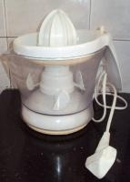 |
| Citrus juicer |
| (c) Su Kahumbu, Kenya
|
N.B Citrus fruit are normally juiced using special citrus juicers as their skins contain oils that will create the juice to taste bitter. There are many types of electric citrus juicers on the market ranging from domestic use to commercial.
| 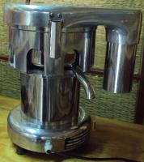 |
| Commercial juicer |
| (c) Su Kahumbu, Kenya
|
For further information on machinery and utensils click here
Maximising on fruit extraction efficiency, colour, clarification and taste
Fruit juice preservation
3. Preservation by freezing is carried out at about -30deg C, after a preliminary de-aeration; storage is at -15 to -20deg C.
Filling, Bottling and Packaging
Filling and bottling
| 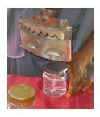 |
| Sealing lids heating the foil with an hot iron |
| (c) Su Kahumbu, Kenya |
| 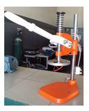 |
| Commercial hand sealer. |
| (c) Su Kahumbu, Kenya |
Small scale production packaging can be done cost effectively with plastic bottles, plastic bags that need sealing, and cups that need sealing. For cups using the foil heat sealed lids is adequate and can be done cost effectively to begin with by using a hot iron before upgrading to a more commercial hand sealer.
- Pay particular attention to the quality of re-usable bottles, check for cracks, chips etc and wash thoroughly before using. If bottles are not able to be sterilized with hot water as in the case of plastic bottles, they can be sterilised in cold water using the sterilising agent Calcium Hypochlorite.
- The concentration of preservative should be carefully controlled for correct preservation of squashes and cordials, and may be subject to local laws. Check first and use accurate scales to measure the preservative.
- The temperature and time of heating are critical for achieving both the correct shelf life of the drink and retaining a good colour and flavour. A thermometer and clock are therefore needed.
- Standardisation of products is a must therefore the correct weight should be filled into the bottles each time
Labelling tips
1. Product Name
2. Company name and address
3. Manufacture and Expiry dates
4. Ingredients
5. Weight of product
6. Nutritional analysis
7. Kebs Standardisation Mark
8. Batch Number
9. Barcodes (for main stream markets only)
10. Storage Information
11. Usage Information
12. Preservatives
| Sticker Advantages | Disadvantages |
| 1) Can be used on different packaging | 1) Labour intensive |
| 2) Can be made in small quantities | 2) Stickers may come off products when wet |
| 3) Can be changed cost effectively | |
| 4) Initial capital outlay is low |
| Printed Packaging Advantages | Disadvantages |
| 1) Eliminate labour cost of adding information per unit as with stickers | 1) Products are limited to the packaging |
| 2) Initial start up costs are high | |
| 3) Changes are not easy to make and can result in voluminous waste of packaging materials |
Shrink wrapping
| 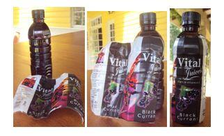 |
| Shrink wrapping |
| (c) Su Kahumbu, Kenya |
Information Source Links
- www.practicalaction.org
Fruit Juice processing Practical Action Technical Brief
Mixed fruit Juice Manufacture Practical Action Technical Brief
Lime juice Practical Action Technical Brief
Lime cordial Practical Action Technical Brief
Nas naran lime juice Practical Action Technical Brief
Passion fruit juice Practical Action Technical Brief
Liquid filling and packaging Practical Action Technical Brief
Small-scale of ready to drink pineapple juice Food Chain No 27
Contact Source Links: Juicing Machinery available from
- Food Grade sanitisers available from Ecolabs East Africa Ltd, Box 63497-00619 Nairobi; info@ecolabs.co.ke, 0722 204 170, 0733 620 718, Landline: 856 22 34, 856 05 47
- Johnson Diversey East Africa Ltd., Tel: (254) 20 422 4000 Hygiene Centre, Kabete, Fax: (254) 20 422 4888 Kaptagat Road, Loresho, P.O. Box 41939, 00100 GPO NAIROBI